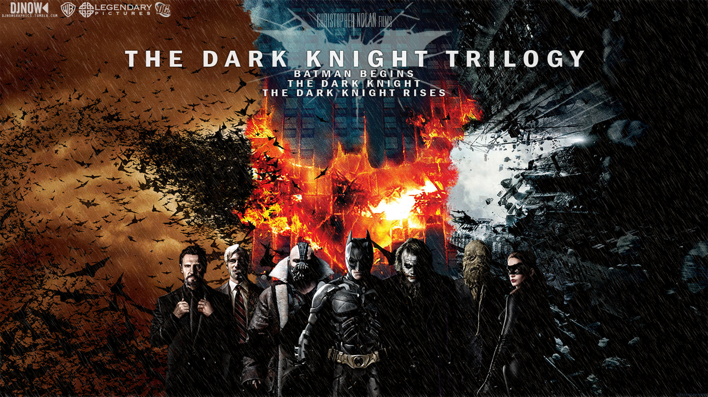

-
Arrival

Film genel anlamda güzel olmak ile birlikte her ne kadar sayısalcı ve mantıkçı olsam da uzaylılarla iletişimin işin sonunda sayısal mantık ile değil dilbilimcil bir yaklaşımla gerçekleşmesi ilginç gelmişti.
-
Lord of the Rings

Neden sevdiğimi anlatmaya gerek olmadığını düşünüyorum. Mükemmel bir fantastik dünyada geçen bir film.
-
The Dark Knight Trilogy

Süper kahraman evrenleri seven birisi olarak Nolan'ın üçlemesini çok seviyorum. Her filmi gayet iyi olmakla beraber Heath Ledger'ın canlandırdığı Joker karakteri ile birlikte çok etkileyici olan "The Dark Knight" üçlemedeki favorim.
-
Friends

Defalarca izlemiş olduğum favori Sitcom'um. 6 karakterin 6sı da çok güzel yazılmış ve oynanmış karakterler. Her bölüm tekrar izlemesi bile çok keyifli ve kahkahalara boğan bir dizi.
-
Doctor Who

Doctor Who kesinlikle benim favori dizim. Fantastik-Bilim kurgu türündeki bu dizinin bana verdiği hisleri hiçbir dizi veremedi.
-
Game of Thrones

Yine fantastik evrenden olan bu dizi karakteri ile cgi'ı ile mekan tasarımı ile oyunculukları ile dünyanın en iyi dizilerinden birisinden kesinlikle.
- Game of Thrones Serisi
- Fırtına Işığı Arşivi Serisi
- Kral Katili Güncesi Serisi